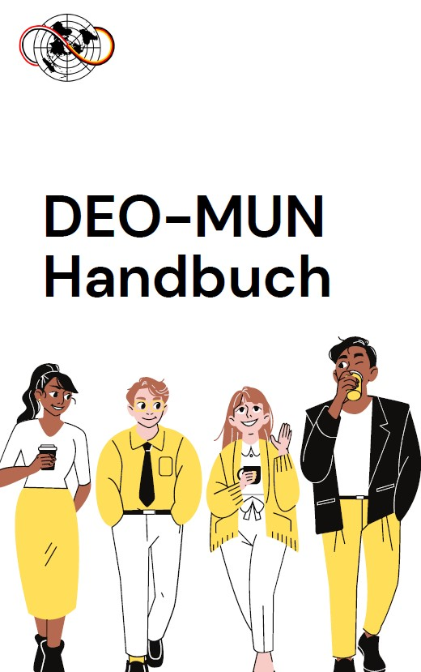
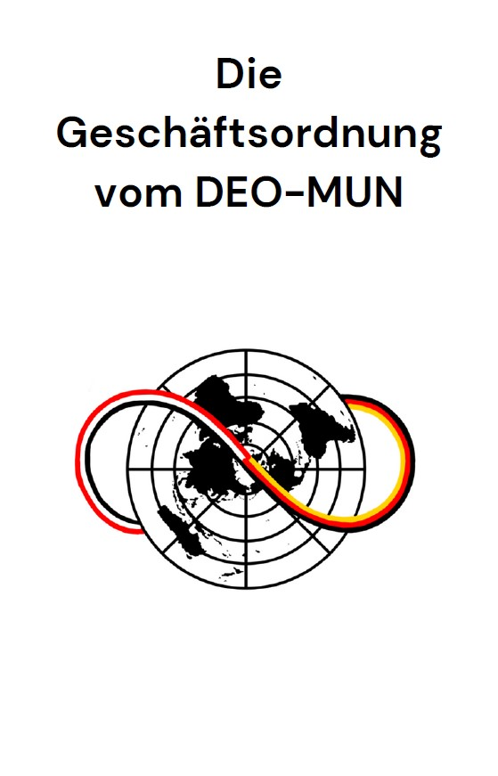
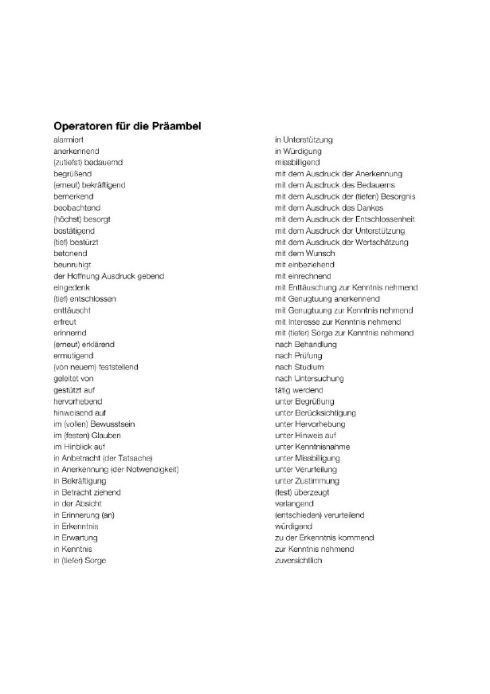

Zweck der Handbücher
Der Zweck der Handbücher ist eine grundlegende inhaltiche Vorbereitung für die Deligierten zu gewährleisten.
Die Deligierten können aus dem der Geschäftsordnung die Regeln entnehmen. Die Einhaltung dieser Regeln ist verbindlich an alle Teilnehmenden. In dem DEO-MUN Handbuch, sind allgemeine Informationen zu den Konferenzen enthalten.
Gremiumsspezifische Informationen sind in den Handbüchern der jeweiligen Gremien
Klicken Sie zum Runterladen das gewünschte Hadnbuch an.
Allgemein relevante Informationen
Das DEO-MUN Handbuch
Die Geschäftsordnung
Operatoren
Gremiumsspezifische Informationen
Hanbuch Generalversammlung

Handbuch Sicherheitsrat

Handbuch Menschenrechtsrat

Wirtschafts- und Sozialrat Handbuch